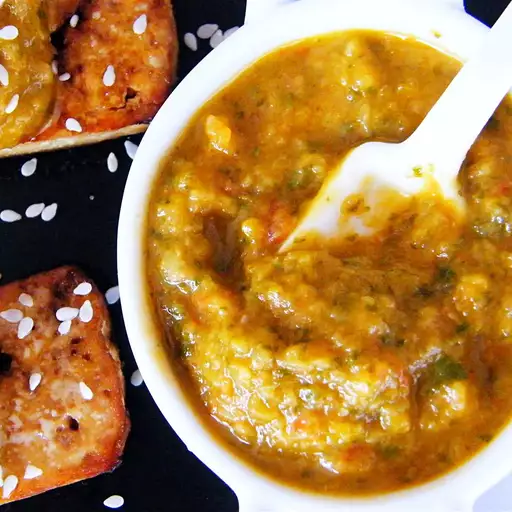

Hot Sauce

Description
If hot sauce is your thing, you will love, love, love this fresh tasty
recipe.
Ingredients
- 10 fresh hot chile peppers, stems removed
- 1 onion, coarsely chopped
- ¼ cup pitted fresh dates, or more to taste
- ¼ cup fresh basil leaves
- ¼ cup fresh parsley leaves
- 1 roma (plum) tomato, roughly chopped
- 2 tablespoons beef bouillon powder
- 4 garlic cloves
- ½ cup vegetable oil, or as needed
- salt to taste
- 1 squeeze lemon juice
Steps
-
Place peppers, onion, dates, basil, parsley, tomato, bouillon powder,
and garlic in the bowl of a food processor; pour in the oil. Pulse
mixture until finely chopped, adding more oil if needed to thin; season
with salt.
-
Pour pepper mixture into a small saucepan; bring to a boil. Squeeze
lemon juice into pepper mixture, reduce heat to low, and simmer for 15
minutes.
-
Allow pepper mixture to cool; pour into a glass jar with a lid. Store
pepper sauce in the refrigerator.